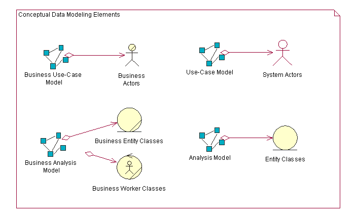
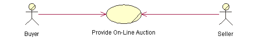
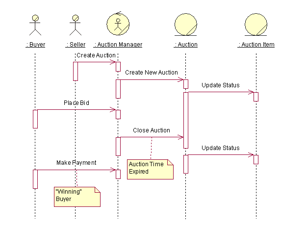
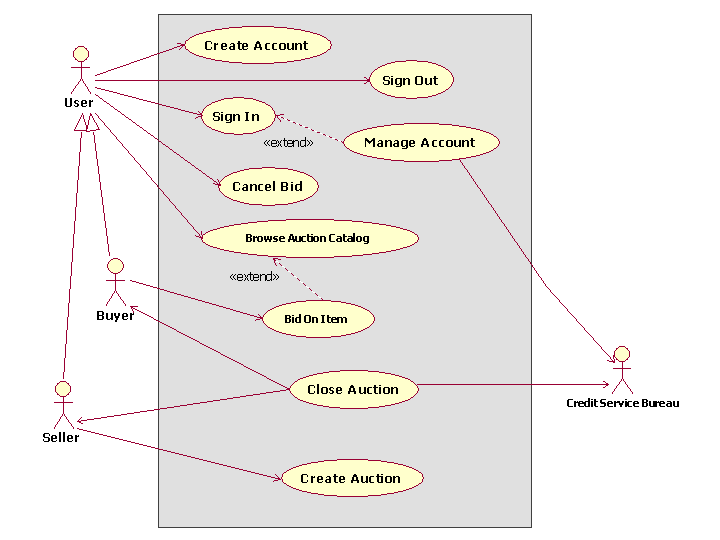

| Concept: Conceptual Data Modeling |
 |
|
| Related Elements |
|---|
IntroductionAs defined in [NBG01], conceptual data modeling represents the initial stage in the development of the design of the persistent data and persistent data storage for the system. In many cases, the persistent data for the system are managed by a relational database management system (RDBMS). The business and system entities identified at a conceptual level from the business models and system requirements will be evolved through the use-case analysis, use-case design, and database design tasks into detailed physical table designs that will be implemented in the RDBMS. Note that the Conceptual Data Model discussed in this concept document is not a separate work product. Instead it consists of a composite view of information contained in existing Business Modeling, Requirements, and Analysis and Design Disciplines work products that is relevant to the development of the Data Model. The Data Model typically evolves through the following three general stages:
The tasks related to database design span the entire software development lifecycle, and the initial database design tasks might start during the inception phase. For projects that use business modeling to describe the business context of the application, database design may start at a conceptual level with the identification of Business Actors and Business Use Cases in the Business Use-Case Model, and the Business Workers and Business Entities in the Business Analysis Model. For projects that do not use business modeling, the database design might start at the conceptual level with the identification of System Actors and System Use Cases in the Use-Case Model, and the identification of Analysis Classes in the Analysis Model from the Use-Case Realizations. The figure below shows the set of Conceptual Data Model elements that reside in the Business Models, Requirements Models, and the Analysis Model.
 The following sections describe the elements of the Business Models, Use-Case Model, and Analysis Model that can be used to define the initial Conceptual Data Model for persistent data in the system. Conceptual Data Modeling ElementsBusiness ModelsBusiness Use-Case Model The Business Use-Case Model consists of Business Actors and Business Use Cases. The Business Use Cases represent key business processes that are used to define the context for the system to be developed. Business Actors represent key external entities that interact with the business through the Business Use Cases. The figure below shows a very simple example Business Use-Case Model for an online auction application.
 As entities of significance to the problem of space for the system, Business Actors are candidate entities for the Conceptual Data Model. In the example above, the Buyer and Seller Business Actors are candidate entities for which the online auction application must store information. Business Analysis Model The Business Analysis Model contains classes that model the Business Workers and Business Entities identified from analysis of the workflow in the Business Use Case. Business Workers represent the participating workers that perform the actions needed to carry out that workflow. Business Entities are "things" that the Business Workers use or produce during that workflow. In many cases, the Business Entities represent types of information that the system must store persistently. The figure below shows an example sequence diagram that depicts Business Workers and Business Entities from one scenario of the Business Use Case titled "Provide Online Auction" for managing an auction.
 In this simplified example, the Auction Manager object represents a Business Worker role that will likely be performed by the online auction management system itself. The Auction and Auction Item objects are Business Entities that are used or produced by the Auction Manager worker acting as an agent for the Seller and Buyer Business Actors. From a database design perspective, the Auction and Auction Item Business Entities are candidate entities for the Conceptual Data Model. Requirements and Analysis ModelsFor projects that do not perform business modeling, the Requirements (System Use Case) and Analysis Models contain model elements that can be used to develop an initial Conceptual Data Model. For projects that use business modeling, the business entities and relationships identified in the Business Analysis Models are refined and detailed in the Analysis Model as Entity Classes. System Use-Case Model The System Use-Case Model contains System Actors and System Use Cases that define the primary interactions of the users with the system. The System Use Cases define the functional requirements for the system. From a conceptual data modeling perspective, the System Actors represent entities external to the system for which the system might need to store persistent information. This is important in cases where the System Actor is an external system that provides data to and/or receives data from the system under development. System Actors can be derived from the Business Actors in the Business Use-Case Model and the Business Workers in the Business Analysis Model. The figure below depicts the Business Use-Case Model for the online auction system. In this model, the Buyer and Seller Business Actors are now derived from a generic User Business Actor. A new System Actor named Credit Service Bureau has been added to reflect the need to process payments through an external entity. This new System Actor is another candidate entity for the Conceptual Data Model.
 Analysis Model The Analysis Model contains the Analysis Classes identified in the Use-Case Realizations for the System Use Cases. The types of Analysis Classes that are of primary interest from a conceptual data modeling perspective are the Entity Analysis Classes. As defined in Guideline: Analysis Class, Entity Analysis Classes represent information managed by the system that must be stored in a persistent manner. The Entity Analysis Classes and their relationships form the basis of the initial Data Model for the application. The conceptual Entity Analysis Classes in the Analysis Model might be refined and detailed into logical Persistent Design Classes in the Design Model. These design classes represent candidate tables in the Data Model. The attributes of the classes are candidate columns for the tables and also represent candidate keys for them. Guideline: Forward-Engineering Relational Databases for a description of how elements in the Design Model can be mapped to Data Model elements. |
© Copyright IBM Corp. 1987, 2006. All Rights Reserved. |